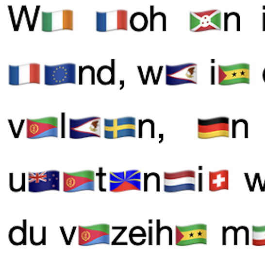

D🇮🇪 Le🇮🇩en 🇩🇪s ju🇳🇬en W🇪🇷🇹🇭🇪🇷
ATRASとは?
ATRASとは英語「Arbitrary Textual Replacement with Assigned ccTLD and emoji-Flags」のアクロニムで、ラテン文字アルファベットの文章中に含まれる国別トップレベルドメイン（country code top-level domainのこと。以下ccTLDと呼ぶ）のバイナリを、その国と地域ごとに合致させた絵文字国旗（emoji-flags）で置換する方法である。
例として世界人権宣言の第一条の英語版は、
「All human beings are born free and equal in dignity and rights. They are endowed with reason and conscience and should act towards one another in a spirit of brotherhood.」
であり、これをATRASした場合、
「🇦🇱l 🇭🇺🇲🇦n 🇧🇪🇮🇳🇬🇸 a🇷🇪 🇧🇴rn 🇫🇷🇪🇪 and eq🇺🇦l 🇮🇳 di🇬🇳🇮🇹y and ri🇬🇭ts. 🇹🇭ey 🇦🇷e en🇩🇴wed w🇮🇹h 🇷🇪🇦🇸on and 🇨🇴n🇸🇨🇮🇪🇳🇨e and 🇸🇭ould 🇦🇨t 🇹🇴w🇦🇷ds o🇳🇪 a🇳🇴🇹🇭🇪🇷 🇮🇳 a sp🇮🇷🇮🇹 of b🇷🇴🇹🇭🇪🇷hood.」
となる。
上の例では、最初の単語"All"にはアルバニアを表すccTLDのバイナリ"al"が含まれているため、"Al"を"🇦🇱"で置換することができる。"ll"というccTLDは存在しないため、置換できない"l"が残り"🇦🇱l"となる。
また初めから3つ目の単語の"beings"という単語は"be/in/gs"というように区切られ、それぞれ"🇧🇪(ベルギー)/🇮🇳(インド)/🇬🇸(イギリス領サウスジョージア・サウスサンドウィッチ諸島)"と置換され、結果として"🇧🇪🇮🇳🇬🇸"が文章内に現れる。
このように読者はATRASの文章を読むとき、パズルやクイズを解くように、頭の中で国旗をアルファベットの2文字(バイナリ)のドメインにデコードして読む必要がある。